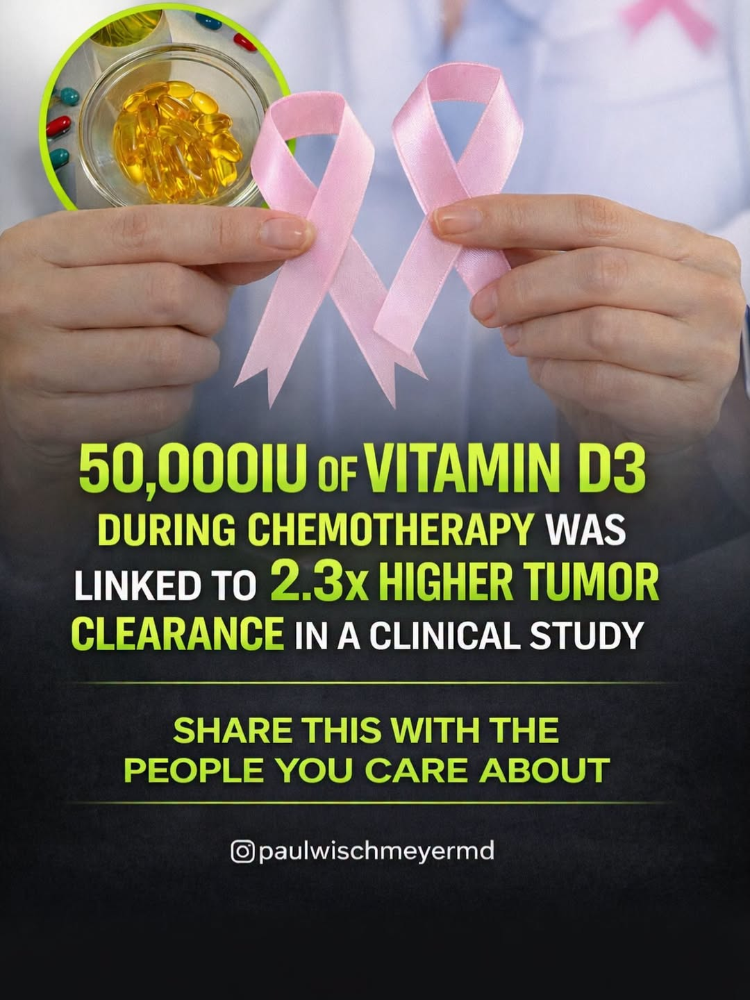

Link to journal paper (2025):
Paper · Nutr Cancer · 2025Vitamin D Supplementation Improves Pathological Complete Response in Breast Cancer Patients Undergoing Neoadjuvant Chemotherapy: A Randomized Clinical Trial.This study aimed to evaluate the effect of vitamin D (VD) supplementation on the pathological complete response (pCR) rate in women with breast cancer (BC) undergoing neoadjuvant chemotherapy (NCT). A randomized clinical trial was conducted with 80 women aged ≥45years with BC who were eligible for NCT. Women were randomized into two groups: VD group, daily supplementation with 2,000IU of cholecalciferol (n = 40) or…pubmed.ncbi.nlm.nih.gov

High-dose vitamin D with chemo raised complete response 2.3-fold in breast cancer RCT
A 2025 World Journal of Surgery randomized trial of 227 women receiving neoadjuvant chemotherapy compared chemotherapy alone with chemo plus 50,000 IU vitamin D3 weekly. Vitamin D was associated with higher odds of pathologic complete response, but it was an adjunct and survival was not studied.